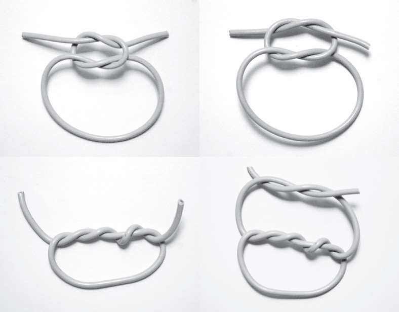

无麸质巧克力布朗尼无麸质巧克力布朗尼
无麸质巧克力布朗尼无麸质巧克力布朗尼配料
115克黄油
125克黑巧克力
150克糖粉
80克土豆粉
2个中等大小的鸡蛋
方法
1. 将黄油和巧克力融化，一起搅匀，然后冷却一会儿。
2. 将加入糖的蛋液打发。
3. 缓缓将巧克力倒入蛋液中。
4. 倒入土豆粉。
5. 将混合液体倒入单独的几个小号模具中，将烤箱温度调至180°C预热，然后放入模具，烤大约10分钟（或者根据你喜欢的熟度调节时间）。
数学，就像食谱一样，包含配料和方法。同样，就像食谱如果不谈论方法会变得无用，如果我们不谈论数学的研究方法，而只讨论数学的研究对象，我们就无法理解数学究竟是什么。碰巧，在上述这个食谱里，方法很重要——我们没法儿直接用一个很大的托盘成功地烤出布朗尼，我们必须要用小号模具。在数学里，方法也许比配料更重要。真正的数学很可能并不是你在学校的数学课上学到的东西。不过，就我自己而言，我似乎一直都知道数学的内涵要比我们在学校学到的那些更丰富。那么，什么是数学呢？
按照所需厨具来给食谱分类会怎样？
做饭的流程通常类似于这样：决定你想做什么，买原材料，然后着手烹饪。有时，步骤的顺序会发生颠倒：你在商店或市场里闲逛，看到一些不错的食材，想要用它们来做饭。也许是某种格外新鲜的鱼，也许是一种你从未见过的蘑菇。你先把它们买回家，然后才开始查可以用它们做什么菜。
偶尔，你遇到的情况可能会与上述这两种完全不同：你买了一个新的厨具，于是你想用这个厨具做所有它能做的美食。也许你买了一台搅拌机，于是突然之间，你便开始做汤、奶昔、冰激凌。你可能还试着用它做了土豆泥，但结果很不理想（成品看起来就像一罐胶水）。也许你买了一只慢炖锅，或是一只蒸锅，或是一个电饭煲。也许你刚刚学会了一种新的烹饪技术，比如分离蛋清和蛋黄，或是给黄油脱水，于是你想用你的新技术做尽可能多的事。
因此，我们有两种方法来烹饪，而其中一种看起来要更实用。大多数烹饪书都是根据菜品的性质，而不是烹饪方法来归类的：一章介绍前菜，一章介绍汤品，一章介绍鱼类的做法，一章介绍肉类的做法，一章介绍甜品，等等。有时，书里可能会有一章专门讲解某种配料的使用，比如专门介绍巧克力类甜点的食谱或蔬菜类的食谱等。有时，书里可能还会有一章专门介绍特殊场合的烹饪食谱，比如圣诞节午宴。但如果书里有一章是关于“用到橡胶刮铲的食谱”或者“用到手动打蛋器的食谱”的，那么这本书看起来就太奇怪了。不过，厨具本身通常都会自带一些可以用到此工具的简单食谱，搅拌机会自带搅拌机食谱，慢炖锅和冰激凌机也同样如此。
这与做学术研究的研究对象颇具异曲同工之处。通常，当你说起你所研究的课题时，你会根据你的研究对象是什么来描述它。也许你研究的是鸟类、植物、食物、烹饪、理发，或者是过去发生的事，又抑或是社会如何运转。一旦你决定了想要研究什么，你就需要学习研究它的方法，或是自创一些研究方法，就像在烹饪中学习打发蛋白或是给黄油脱水一样。
然而，在数学领域，我们所研究的对象本身就取决于我们使用的研究方法。这就类似于我们买了一个搅拌机，然后决定用它做各种美食这种情况。与其他学科相比，数学的研究过程可以说是逆向的。通常而言，是我们的研究对象决定我们的研究方法；是我们先决定晚饭想吃什么，然后再选用合适的厨具。但是，当我们因新买的搅拌机而心情激动时，我们就会想试试用它来做我们所有的饭菜。（至少，我就见过这么做的人。）
这多少有点儿像“先有鸡还是先有蛋”的问题。但我的论点是，数学是由它的研究方法来定义的，而它的研究对象则是由那些研究方法决定的。
当风格影响内容的选择时
用研究方法给数学分类与艺术流派的分类十分相似。诸如立体主义、点彩画派、印象派这些流派都是依据作画方法，而不是依据作画内容来划分的。芭蕾和歌剧也是如此，其艺术形式是根据表达方式划分的，而主题内容通常是有固定范畴的。芭蕾很适合抒发情感，但并不那么适合描述对白，也不适合表达政治诉求。立体主义显然不适合描绘昆虫。交响乐适合表现大喜大悲，但并不适合传达如“请把盐递给我”这样的寻常信息。
在数学里，我们使用的方法是逻辑。我们只想使用纯粹的逻辑推理，而非使用实验、实证、盲信、希望、民主、暴力等种种途径。仅仅是逻辑。那么，我们研究的对象是什么呢？我们研究所有符合逻辑规则的事物。
数学是运用逻辑规则，对所有符合逻辑规则的事物进行的研究。
我承认这是一个过分简化的定义。但我希望，在读了本书更多内容以后，你会明白这个定义就它本身而言已经足够准确了，它正是一个范畴论数学家会给出的定义，而非像第一眼看上去那样是个循环论证。
用它是做什么的来描述事物
设想有人问你“谁是首相”，而你回答说“他是政府首脑”。这个答案没错，但并不能让人满意，因为它没有正面回答问题：你描述了首相的性质，但没告诉我们首相是做什么的。同样，我刚刚对于数学的“定义”也描述了数学的特点，但并没有告诉你它是做什么的。因此，这个定义可能不是很有帮助，或者至少不太全面——不过，这只是了解数学的开始。
我们可以说清楚数学是什么，而不是数学像什么吗？数学到底研究什么？它的确研究数字，但也研究其他东西，比如形状、图像和模式，以及肉眼看不到的——富有逻辑的想法。甚至还有更多：那些我们目前还不知道的东西。数学持续发展的原因之一就是，一旦你掌握了一种方法，你总能找到更多可以用它来研究的对象，然后你又能找到更多研究这些对象的方法，再然后你又能用新方法找到更多可以研究的对象，如此循环往复，就像鸡生蛋，蛋生鸡，鸡生蛋……
登上一座山能让你看到更高的山
你是否有过这种体验——登上一座山的顶峰，发现的却是比它更高的所有其他山峰？数学也是如此，它越发展，可供研究的对象就越多。此事的发生一般伴随着两种过程。
第一种是“抽象化”：我们用逻辑梳理清楚了本来没有逻辑存在的领域。打个比方，可能你原本只用电饭煲煮米饭，而有一天，你发现你也可以用它来烤蛋糕，而且用电饭煲烤出来的蛋糕和用传统烤箱烤出来的蛋糕只有一点点不同。换句话说，我们借助一种新的视角来看待原本不是数学的事物，从而将其变为数学。这就是x和y会出现在数学领域的原因——我们原先的目的是研究数字，但后来我们发现此种处理数字的方法也可以应用到其他领域。
第二种是“广义化”：我们明白了如何用我们已经理解的事物来建构更复杂的事物。这就好像你用搅拌机做了一个蛋糕，又用搅拌机做了酥皮，然后把两者堆叠起来，创造出一种新的甜点。在数学领域，这就等同于用比较简单的数字、三角形和日常生活中的事物来建构多项式、矩阵、四维空间等。
我会在接下来的几章探讨抽象化和广义化这两种过程，但首先我想请读者看一看数学是如何奇妙又怪异地实现这两个过程的。
鸟类不等于鸟类研究
假设你是一个研究鸟类的专家。你研究鸟类的行为、饮食、求偶方式、育幼方式以及它们怎样消化食物，等等。然而，你永远不可能用更简单的鸟类来创造一种新的鸟类——鸟类不是这样创造出来的。在这件事上，你不能使用广义化，至少不能使用数学的广义化。
另一件你无法做到的事情是把不是鸟类的东西变成鸟类。鸟也不是这样创造出来的。所以你也没有办法使用抽象化。有时，我们也会发现自己犯了分类的错误，需要对此进行修正，比如把雷龙“变为”一种迷惑龙，但那只是因为我们意识到了雷龙是迷惑龙属的一种，而不是真的把前者变成了后者。我们不是魔术师，不能把一件东西变成另一件东西。但在数学里，我们可以这样做，因为数学研究的是关于事物的想法，而不是真实事物本身。因此，我们只需要改变自己头脑中的想法，就可以改变我们的研究对象。通常，这意味着改变我们对某种事物的看法，改变我们的视角，或是改变我们描述的方式。
一个数学上的例子是绳结，如下图所示。

在18世纪和19世纪，范德蒙、高斯和其他一些数学家想出了如何用数学的方式来看待绳结，这样他们就可以用逻辑规则来研究绳结了。
这个方式就是，想象把一根绳子的两端粘在一起，使其成为一个封闭的环。虽然这样一来，绳结没有胶水就做不成了，但这也让数学家能更方便地研究它。每一个绳结都可以用三维空间里的一个环来表示。在拓扑学里，研究这种问题的方法有很多，对此我们稍后会加以讨论。总之，这样一来，我们不但可以对真正存在的绳结进行种种推断，还可以研究那些在宏观世界中不成立，但在微观世界的分子结构中真实存在的“结”。
关于将“真实”世界中的事物转化为“数学”世界中的事物，几何图形是另一个更为古老的例子。
数学的发展可以说经历了以下几个阶段：
1. 它起源于对数字的研究。
2. 人们想出了一些方法来研究这些数字。
3. 人们意识到，这些方法也可以用来研究其他事物。
4. 人们四处寻找其他可以用这些方法来研究的事物。
其实还有一个步骤0，位于数字诞生以前：有人发明了数字这个概念。数字可以说是数学中可以研究的最基本的东西，但数字并不是一开始就有的。也许，数字的发明就是最早的抽象化过程。
接下来我要讲的故事是关于抽象的数学的。我想说的是，它的力量和美丽并非体现在它所提供的答案和它所解决的问题上，而在于它对人的启蒙，它带来的照亮世界的一束光。正是这束光让人看得更加清楚，而由此，我们便迈出了认识周围世界的第一步。